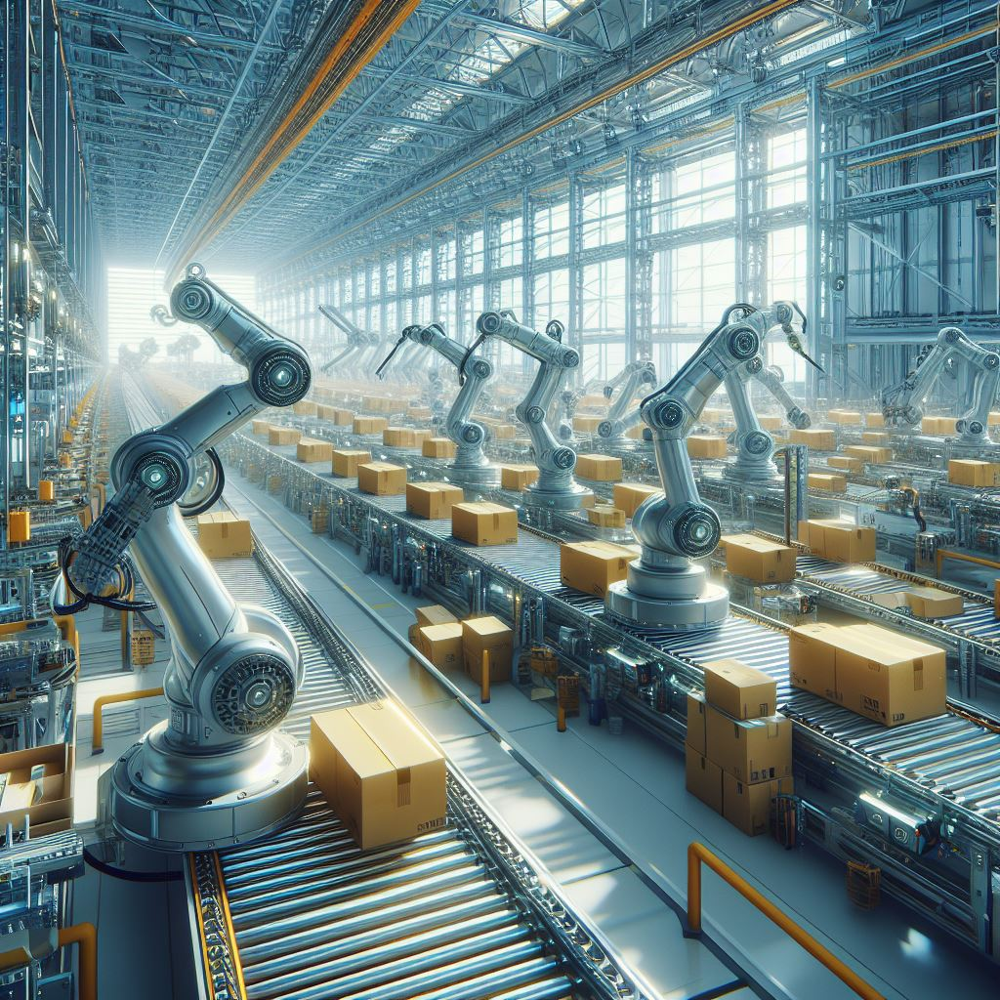
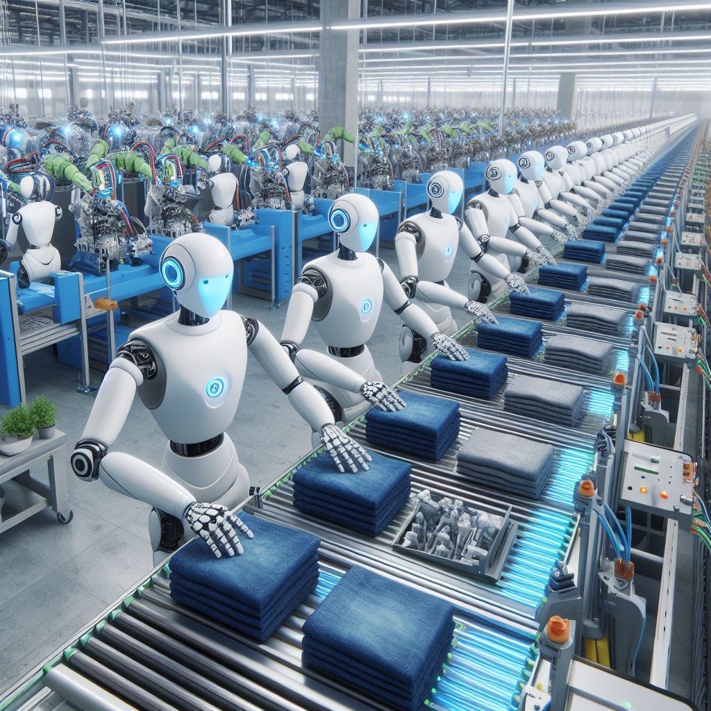

En la actualidad, la robótica ha consolidado su presencia en un amplio espectro de entornos fabriles, desempeñando un papel fundamental en la transformación de los procesos industriales. Esta incorporación masiva de tecnología robótica ha conllevado beneficios significativos en términos de productividad, donde la eficiencia y la precisión operativa se han vuelto invaluables. A medida que avanzamos en esta nueva era de automatización, se evidencia un cambio de paradigma trascendental en los últimos 50 años de producción.
Este cambio implica una disminución progresiva de la dependencia del factor humano en las tareas productivas, marcando un hito en la evolución de la manufactura. La robotización ha introducido un dinamismo revolucionario que redefine la relación entre la tecnología y el trabajo humano. Este fenómeno plantea interrogantes cruciales sobre las implicaciones a largo plazo.
Exigiendo una atención cercana a las consecuencias y virtudes emergentes. Es esencial observar detenidamente cómo este avance tecnológico continuará perfilando el paisaje industrial, influenciando no solo la productividad, sino también la dinámica laboral y las consideraciones éticas asociadas. Este proceso de integración robótica en la producción abre un amplio abanico de posibilidades y desafíos que demandarán una gestión cuidadosa para maximizar sus beneficios y minimizar los posibles impactos adversos en la sociedad y la fuerza laboral.
La robótica ya presente...
Exigiendo una atención cercana a las consecuencias y virtudes emergentes. Es esencial observar detenidamente cómo este avance tecnológico continuará perfilando el paisaje industrial, influenciando no solo la productividad, sino también la dinámica laboral y las consideraciones éticas asociadas. Este proceso de integración robótica en la producción abre un amplio abanico de posibilidades y desafíos que demandarán una gestión cuidadosa para maximizar sus beneficios y minimizar los posibles impactos adversos en la sociedad y la fuerza laboral.

En la actualidad, los robots humanoides están transformando diversos ámbitos, desempeñando un papel fundamental en la reconfiguración de la relación entre tecnología y sociedad. Su introducción masiva ha aportado versatilidad y adaptabilidad, redefiniendo posibilidades más allá de la manufactura tradicional. A medida que avanzamos hacia una nueva etapa de automatización, se delinean cambios fundamentales que podrían alterar drásticamente la dinámica actual.
Este cambio implica no solo transformaciones en procesos industriales, sino también una reevaluación profunda de la relación entre humanos y tecnología. La disminución de la dependencia humana en tareas clave marca un hito crucial en la evolución de la interacción hombre-máquina. La llegada de robots humanoides plantea cuestionamientos esenciales sobre las implicaciones a largo plazo en nuestra sociedad.
Este fenómeno exige una atención cercana a las consecuencias inmediatas y una reflexión sobre las virtudes emergentes de la simbiosis entre humanos y robots humanoides. La observación de cómo este avance continuará perfilando el panorama industrial es esencial, influyendo en la productividad, la configuración de la fuerza laboral y las consideraciones éticas. La integración de robots humanoides abre posibilidades inexploradas y plantea desafíos significativos que requerirán una gestión cuidadosa para maximizar beneficios y minimizar impactos adversos en nuestra sociedad en constante evolución y en la dinámica laboral futura.
La robótica que está por venir...
Este fenómeno exige una atención cercana a las consecuencias inmediatas y una reflexión sobre las virtudes emergentes de la simbiosis entre humanos y robots humanoides. La observación de cómo este avance continuará perfilando el panorama industrial es esencial, influyendo en la productividad, la configuración de la fuerza laboral y las consideraciones éticas. La integración de robots humanoides abre posibilidades inexploradas y plantea desafíos significativos que requerirán una gestión cuidadosa para maximizar beneficios y minimizar impactos adversos en nuestra sociedad en constante evolución y en la dinámica laboral futura.